배우기 전에 먼저 해 보세요. 틀려도 괜찮아요.
Ich musste lange warten.은 무슨 뜻일까요?
musste는 müssen의 지난 모양이에요.
Wir haben den Zug verpasst.는 무슨 뜻일까요?
verpassen은 놓치는 것이에요.
A2.1 Angekommen · Lektion 2
경험 이야기
음성은 준비 중이에요. 듣기 단추와 받아쓰기는 음성이 올라오면 쓸 수 있어요. 그동안은 글을 읽으면서 공부해요.
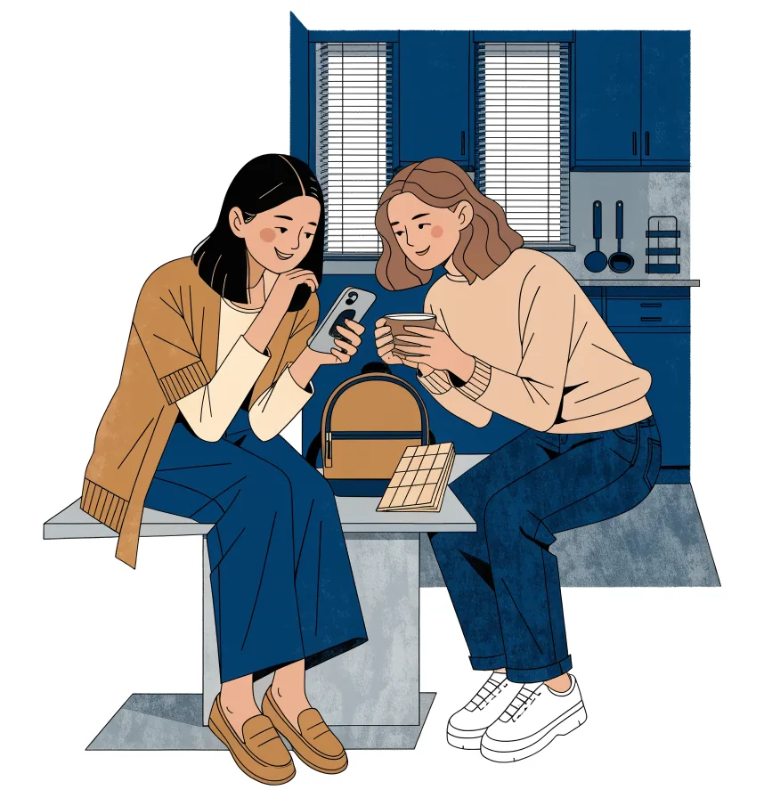
주말이 지나면 사람들이 Wie war's?라고 물어요. 여행에서 본 것, 출장에서 있었던 일, 어릴 때 이야기를 하려면 지난 일을 순서대로 말할 수 있어야 해요. 이 과에서는 Perfekt를 넓히고, 조동사의 지난 모양을 배워요.
문법 Perfekt (trennbare und untrennbare Verben), Präteritum: war, hatte, konnte, musste, wollte, durfte
과제대학교환 학기 경험을 글로 소개하기
과제직장출장 다녀온 이야기를 동료에게 하기
이 과를 마치면 여행과 주말에 있었던 일을 순서대로 이야기하고, 어릴 때 이야기를 할 수 있어요.
이 과에서 쓸 말이에요.
배우기 전에 먼저 해 보세요. 틀려도 괜찮아요.
Ich musste lange warten.은 무슨 뜻일까요?
musste는 müssen의 지난 모양이에요.
Wir haben den Zug verpasst.는 무슨 뜻일까요?
verpassen은 놓치는 것이에요.
Lektion 1의 낱말 다섯 개를 다시 떠올려 보세요.
일요일 저녁, WG 부엌이에요. Jiu는 어제 어학원 친구 Carlos, Ewa와 하이델베르크에 다녀왔어요. Lena가 어땠는지 물어요.
들으면서 찾아보세요. Jiu는 카페에 무엇을 두고 왔나요?
목요일 아침, 사무실이에요. Dohyun은 어제 슈투트가르트의 고객에게 다녀왔어요. Markus가 출장이 어땠는지 물어요.
들으면서 찾아보세요. Dohyun은 왜 고객에게 늦었나요?
어학원 수업 시간이에요. 오늘의 주제는 어린 시절이에요. Frau Becker가 Sora에게 물어요.
들으면서 찾아보세요. Sora는 어릴 때 무엇이 되고 싶었나요?
세 대화를 듣고 답하세요.
Jiu와 친구들은 먼저 무엇을 했나요?
Am Nachmittag hat die Sonne geschienen.
오후에는 갑자기 비가 왔어요.
Jiu는 카페에 무엇을 두고 왔나요?
Dohyun은 왜 고객에게 늦었나요?
Dohyun konnte in der Besprechung alles auf Deutsch sagen.
낱말 두 개를 못 알아들어서 영어로 말했어요.
Dohyun은 언제 집에 돌아왔나요?
Sora는 어릴 때 무엇이 되고 싶었나요?
Sora durfte als Kind jeden Tag fernsehen.
일요일에만 볼 수 있었어요.
낱말 50개예요. 명사는 der, die, das를 색으로 구분했어요.
die Dienstreise, die Dienstreisen 출장
Wie war die Dienstreise?출장은 어땠어요?
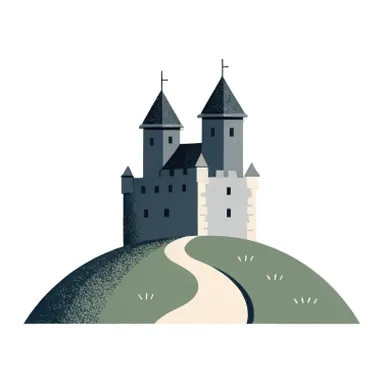
das Schloss, die Schlösser 성
Wir haben das Schloss besichtigt.우리는 성을 구경했어요.
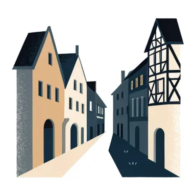
die Altstadt, die Altstädte 구시가지
Die Altstadt ist sehr schön.구시가지는 아주 아름다워요.
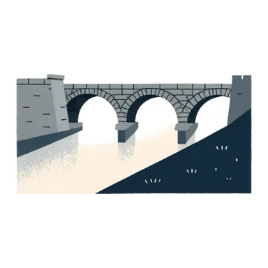
die Brücke, die Brücken 다리
Wir stehen auf der Brücke.우리는 다리 위에 서 있어요.
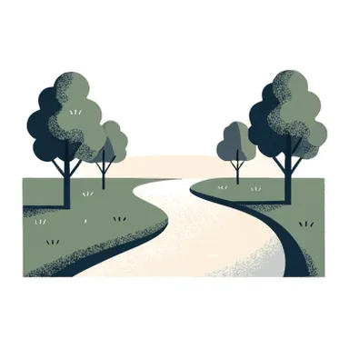
der Fluss, die Flüsse 강
Der Fluss heißt Neckar.그 강의 이름은 네카어예요.
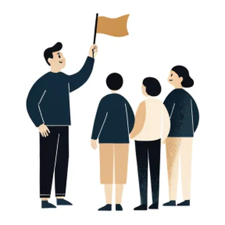
die Führung, die Führungen 안내를 받으며 하는 관람
Die Führung dauert eine Stunde.안내 관람은 한 시간 걸려요.
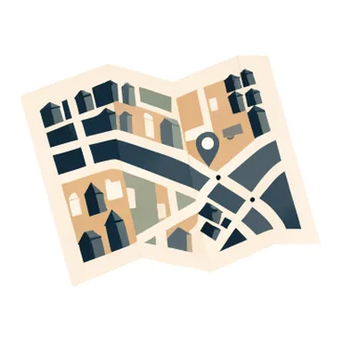
der Stadtplan, die Stadtpläne 시내 지도
Hast du einen Stadtplan?시내 지도 있어요?
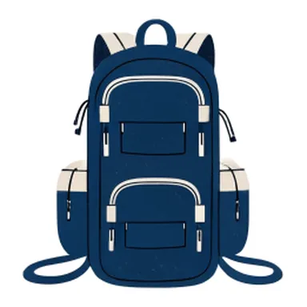
der Rucksack, die Rucksäcke 배낭
Mein Rucksack ist schwer.제 배낭은 무거워요.
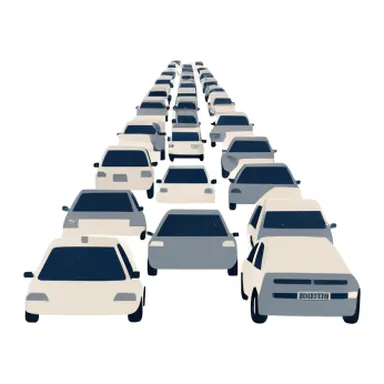
der Stau, die Staus 교통 체증
Wir hatten eine Stunde Stau.길이 한 시간이나 막혔어요.
die Verspätung, die Verspätungen 지연, 늦음
Der Zug hatte vierzig Minuten Verspätung.기차가 40분 늦었어요.
besichtigen (hat besichtigt) 구경하다, 둘러보다
Ich wollte die Stadt besichtigen.저는 시내를 구경하고 싶었어요.
verpassen (hat verpasst) 놓치다
Wir haben den Zug verpasst.우리는 기차를 놓쳤어요.
übernachten (hat übernachtet) 묵다, 하룻밤 자다
Wir haben im Hotel übernachtet.우리는 호텔에서 묵었어요.
zurückkommen (ist zurückgekommen) 돌아오다
Wann bist du zurückgekommen?언제 돌아왔어요?
abholen (hat abgeholt) 데리러 가다, 찾아오다
Markus hat mich am Bahnhof abgeholt.Markus가 역으로 저를 데리러 왔어요.
durch ~을 지나서, ~을 거쳐
Wir sind durch die Altstadt gegangen.우리는 구시가지를 걸었어요.
erzählen (hat erzählt) 이야기하다
Ewa hat viel von Polen erzählt.Ewa가 폴란드 이야기를 많이 했어요.
erklären (hat erklärt) 설명하다
Ich habe das Angebot erklärt.저는 제안을 설명했어요.
verstehen (hat verstanden) 이해하다, 알아듣다
Zwei Wörter habe ich nicht verstanden.낱말 두 개를 못 알아들었어요.
vergessen (du vergisst, hat vergessen) 잊다, 두고 오다
Ich habe meinen Schal vergessen.목도리를 두고 왔어요.
verlieren (hat verloren) 잃어버리다
Carlos hat seinen Schlüssel verloren.Carlos가 열쇠를 잃어버렸어요.
finden (hat gefunden) 찾다, 발견하다
Ich habe den Schlüssel gefunden.제가 열쇠를 찾았어요.
bekommen (hat bekommen) 받다
Ich habe eine E-Mail bekommen.메일을 하나 받았어요.
beginnen (hat begonnen) 시작하다, 시작되다
Die Führung hat um zehn begonnen.안내 관람은 10시에 시작됐어요.
bestehen (hat bestanden) (시험에) 합격하다
Ich habe die Prüfung bestanden.저는 시험에 합격했어요.
lachen (hat gelacht) 웃다
Wir haben viel gelacht.우리는 많이 웃었어요.
das Wort, die Wörter 낱말
Das Wort verstehe ich nicht.그 낱말은 모르겠어요.
danach 그 뒤에
Danach sind wir ins Café gegangen.그 뒤에 우리는 카페에 갔어요.
später 나중에
Später hat es geregnet.나중에 비가 왔어요.
am Anfang 처음에
Am Anfang war es schwer.처음에는 어려웠어요.
am Ende 마지막에
Am Ende waren alle müde.마지막에는 모두 피곤했어요.
plötzlich 갑자기
Plötzlich hat es geregnet.갑자기 비가 왔어요.
zum Glück 다행히
Zum Glück hatte Ewa einen Regenschirm.다행히 Ewa에게 우산이 있었어요.
So ein Pech! 운이 없었네요!
Den Zug verpasst? So ein Pech!기차를 놓쳤어요? 운이 없었네요!
fast 거의
Ich habe fast alles verstanden.저는 거의 다 알아들었어요.
die Kindheit 어린 시절
Meine Kindheit war schön.제 어린 시절은 좋았어요.
als Kind 어릴 때
Als Kind habe ich in Incheon gewohnt.어릴 때 저는 인천에 살았어요.
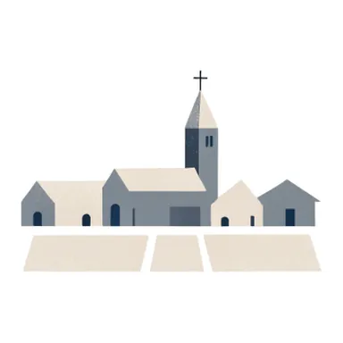
das Dorf, die Dörfer 마을, 시골 동네
Meine Großeltern wohnen in einem Dorf.할아버지 할머니는 시골 마을에 사세요.
auf dem Land 시골에서
In den Ferien waren wir auf dem Land.방학에 우리는 시골에 있었어요.
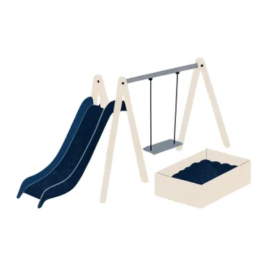
der Spielplatz, die Spielplätze 놀이터
Vor dem Haus war ein Spielplatz.집 앞에 놀이터가 있었어요.
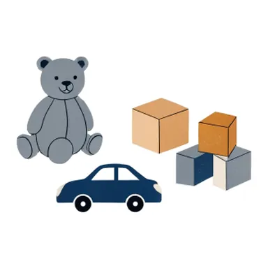
das Spielzeug 장난감
Ich hatte nicht viel Spielzeug.저는 장난감이 많지 않았어요.
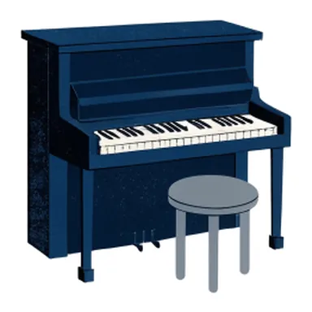
das Klavier, die Klaviere 피아노
Ich musste jeden Tag Klavier üben.저는 날마다 피아노를 연습해야 했어요.
üben (hat geübt) 연습하다
Ich übe jeden Tag Deutsch.저는 날마다 독일어를 연습해요.
zeichnen (hat gezeichnet) (연필이나 펜으로) 그리다
Als Kind habe ich immer gezeichnet.어릴 때 저는 늘 그림을 그렸어요.
werden (du wirst, ist geworden) ~이 되다
Ich wollte Malerin werden.저는 화가가 되고 싶었어요.
der Maler, die Maler 화가
Mein Großvater war Maler.제 할아버지는 화가셨어요.
draußen 밖에서
Wir konnten draußen spielen.우리는 밖에서 놀 수 있었어요.
streng 엄한
Meine Eltern waren streng.부모님은 엄하셨어요.
jung 젊은, 어린
Damals war ich noch jung.그때 저는 아직 어렸어요.
damals 그때, 그 시절에
Damals hatten wir kein Auto.그때 우리는 차가 없었어요.
이 과의 낱말로 여덟 문제를 풀어요.
지난 일을 순서대로 말할 때 쓰는 말이에요. 이 말이 문장 맨 앞에 오면 바로 뒤에 동사가 와요.
규칙
나뉘는 동사는 Partizip을 만들 때 ge가 앞부분과 동사 사이에 들어가요. 앞부분, ge, 동사의 Partizip을 차례로 붙여서 한 낱말로 써요.
| Infinitiv | Partizip | Perfekt |
|---|---|---|
| einkaufen | eingekauft | hat … |
| anrufen | angerufen | hat … |
| aufstehen | aufgestanden | ist … |
| ankommen | angekommen | ist … |
| abfahren | abgefahren | ist … |
주의 haben을 쓸지 sein을 쓸지는 동사의 뜻이 정해요. 자리를 옮기는 동사 abfahren, ankommen, zurückkommen, aufstehen은 sein과 써요. 앞부분이 붙어도 바뀌지 않아요. kommen이 sein과 쓰이니 ankommen과 zurückkommen도 sein이에요.
규칙을 보고 바로 확인해 보세요.
einkaufen의 Partizip은 무엇인가요?
규칙
be-, ver-, er-, ent-, ge-로 시작하는 동사는 나뉘지 않아요. Partizip에 ge-를 붙이지 않아요. -ieren으로 끝나는 동사에도 ge-가 없어요.
| Infinitiv | Partizip |
|---|---|
| besuchen | besucht |
| erklären | erklärt |
| verpassen | verpasst |
| verstehen | verstanden |
| vergessen | vergessen |
| bekommen | bekommen |
| telefonieren | telefoniert |
주의 이 동사들은 거의 모두 haben과 써요. Ich habe den Zug verpasst. 몇몇 동사는 Partizip이 Infinitiv와 모양이 같아요. vergessen과 bekommen이 그래요. Ich habe es vergessen.
규칙을 보고 바로 확인해 보세요.
besuchen의 Partizip은 무엇인가요?
규칙
sein, haben과 조동사 können, müssen, wollen, dürfen은 지난 일을 말할 때 Perfekt보다 Präteritum을 많이 써요. 조동사는 -te가 붙고 ö와 ü의 점이 없어져요. ich와 er, sie, es의 모양이 같아요.
| 주어 | können | müssen | wollen |
|---|---|---|---|
| ich | konnte | musste | wollte |
| du | konntest | musstest | wolltest |
| er, sie | konnte | musste | wollte |
| wir | konnten | mussten | wollten |
| ihr | konntet | musstet | wolltet |
| sie, Sie | konnten | mussten | wollten |
주의 dürfen은 durfte, sein은 war, haben은 hatte예요. Ich durfte nicht fernsehen. Der Zug hatte Verspätung. 조동사가 Präteritum일 때도 다른 동사는 문장 끝에 그대로 둬요. Ich musste lange warten.
규칙을 보고 바로 확인해 보세요.
Ich … nur am Sonntag fernsehen. 빈칸에 알맞은 말은 무엇인가요?
듣고 알맞은 것을 고르세요.
Jiu와 친구들은 왜 기다렸나요?
Wir haben den Zug verpasst und mussten eine Stunde warten.
기차는 얼마나 늦었나요?
Der Zug hatte vierzig Minuten Verspätung.
Sora는 어릴 때 언제 텔레비전을 볼 수 있었나요?
Als Kind durfte ich nur am Sonntag fernsehen.
열쇠는 누가 찾았나요?
Ich habe meinen Schlüssel verloren, aber meine Frau hat ihn gefunden.
Carlos가 Jiu에게 음성 메시지를 남겼어요. 듣고 알맞은 것을 고르세요.
Eine Sprachnachricht von Carlos
Carlos Hallo Jiu, hier ist Carlos. Du, ich muss dir etwas erzählen!
Carlos Gestern bin ich mit dem Fahrrad zum See gefahren. Zuerst war das Wetter schön.
Carlos Aber dann hat es plötzlich geregnet, und ich habe meinen Rucksack am See vergessen.
Carlos Ich bin sofort zurückgefahren. Zum Glück war der Rucksack noch da.
Carlos Am Ende war ich um neun Uhr zu Hause und sehr müde. Aber ich habe meinen Rucksack wieder!
Carlos는 어디에 갔나요?
Carlos는 무엇을 두고 왔나요?
Wann war Carlos zu Hause?
Lena가 스페인에서 보낸 교환 학기를 소개한 글이에요. 읽고, 맞으면 richtig, 틀리면 falsch를 고르세요.
Mein Semester in Valencia
Vor zwei Jahren habe ich ein Semester in Valencia studiert. Am Anfang war es schwer. Ich konnte nur ein bisschen Spanisch und habe im Unterricht fast nichts verstanden.
Ich habe mit zwei Studentinnen aus Italien zusammen gewohnt. Wir haben oft zusammen gekocht und viel gelacht.
Am Wochenende haben wir Ausflüge gemacht. Wir haben viele Städte besichtigt und sind oft ans Meer gefahren.
Im Januar musste ich vier Prüfungen schreiben. Ich habe alle bestanden.
Am Ende wollte ich nicht zurückfahren. Mein Tipp: Lernt die Sprache schon vor dem Semester!
Lena hat in Italien studiert.
스페인 발렌시아에서 공부했어요.
Am Anfang hat Lena im Unterricht nicht viel verstanden.
Lena hat allein gewohnt.
이탈리아 학생 둘과 같이 살았어요.
Lena hat alle Prüfungen bestanden.
Am Ende wollte Lena schnell nach Hause fahren.
돌아가고 싶지 않았다고 했어요.
나뉘는 동사예요. 알맞은 Partizip을 고르세요.
Wir sind um acht Uhr .
Der Zug ist um halb zehn .
Ich habe gestern im Supermarkt .
Dohyun ist um fünf Uhr .
Hast du deine Eltern ?
Wann bist du ?
나뉘지 않는 동사예요. 알맞은 Partizip을 고르세요.
Wir haben das Schloss .
Ich habe den Zug .
Hast du die Frage ?
Jiu hat ihren Schal im Café .
Lena hat ein Paket .
Sora hat in Seoul Design .
haben 아니면 sein? 알맞은 말을 고르세요.
Wir durch die Altstadt gegangen.
Ich meinen Schlüssel verloren.
Carlos mit dem Fahrrad zum See gefahren.
Der Kunde viele Fragen gestellt.
Wann du aufgestanden?
알맞은 Präteritum을 고르세요.
Ich um fünf Uhr aufstehen.
저는 5시에 일어나야 했어요.
Als Kind Sora Malerin werden.
어릴 때 Sora는 화가가 되고 싶었어요.
Wir den Zug nicht nehmen.
우리는 그 기차를 탈 수 없었어요.
du als Kind lange fernsehen?
어릴 때 텔레비전을 오래 봐도 됐어요?
Der Zug vierzig Minuten Verspätung.
기차가 40분 늦었어요.
Meine Eltern streng.
부모님은 엄하셨어요.
낱말을 순서대로 눌러 문장을 만드세요.
먼저 우리는 성을 구경했어요.
그 뒤에 우리는 카페에 갔어요.
저는 한 시간 기다려야 했어요.
어릴 때 저는 의사가 되고 싶었어요.
언제 돌아왔어요?
동사와 Partizip을 짝지으세요.
빈칸에 알맞은 낱말을 쓰세요.
Der Zug hatte eine Stunde .
기차가 한 시간 늦었어요.
Zuerst haben wir gegessen, sind wir ins Kino gegangen.
먼저 밥을 먹고, 그 뒤에 영화관에 갔어요.
Als habe ich in Busan gewohnt.
어릴 때 저는 부산에 살았어요.
Ich habe den Bus .
버스를 놓쳤어요.
듣고 그대로 써 보세요.
음성 준비 중Wir haben den Zug verpasst. 우리는 기차를 놓쳤어요.
음성 준비 중Ich musste früh aufstehen. 저는 일찍 일어나야 했어요.
음성 준비 중Als Kind wollte ich Malerin werden. 어릴 때 저는 화가가 되고 싶었어요.
Wie war's? 어땠어요?
Wie war dein Wochenende? 주말은 어땠어요?
Was hast du gemacht? 뭐 했어요?
Und dann? 그다음에는요?
Zuerst haben wir das Schloss besichtigt. 먼저 성을 구경했어요.
Danach sind wir ins Café gegangen. 그 뒤에 카페에 갔어요.
Am Ende waren wir sehr müde. 마지막에는 아주 피곤했어요.
Der Zug hatte Verspätung. 기차가 늦었어요.
Ich habe den Bus verpasst. 버스를 놓쳤어요.
Ich musste lange warten. 오래 기다려야 했어요.
Zum Glück war alles in Ordnung. 다행히 다 괜찮았어요.
Wirklich? 정말요?
So ein Pech! 운이 없었네요!
Wie schön! 좋았겠어요!
Oh nein! 저런!
Als Kind habe ich in Busan gewohnt. 어릴 때 저는 부산에 살았어요.
Ich wollte Ärztin werden. 저는 의사가 되고 싶었어요.
Ich durfte nicht lange fernsehen. 텔레비전을 오래 보면 안 됐어요.
Wir konnten draußen spielen. 우리는 밖에서 놀 수 있었어요.
과제 고르기
역할 대화와 말하기, 쓰기 과제는 대학 생활과 직장 생활 두 가지예요. 하나를 고르면 다음 과에서도 그쪽 과제가 나와요. 언제든 바꿀 수 있어요.
대화 A에서 역할을 하나 고르세요. 상대의 말은 글로 읽고, 내 차례에는 직접 말해요.
대화 B에서 역할을 하나 고르세요. 상대의 말은 글로 읽고, 내 차례에는 직접 말해요.
어린 시절을 떠올리고 칸을 채우세요. 완성된 문장을 소리 내어 읽어 보세요.
Als Kind habe ich in Daegu gewohnt.
Ich wollte Ärztin werden.
Ich konnte gut schwimmen.
Ich durfte nicht lange fernsehen.
나는 지난 학기에 프랑크푸르트에서 교환 학기를 했어요. 대학에서 다음 학생들을 위해 경험을 써 달라고 해요. 쓰기 전에 Jiu에게 먼저 이야기해 봐요.
3월에 도착했어요. 처음에는 수업을 거의 못 알아들었어요. WG에서 독일 학생 둘과 같이 살았어요. 주말에는 하이델베르크와 쾰른을 구경했어요. 7월에 시험을 세 개 봐야 했고 모두 합격했어요.
Jiu가 교환 학기에 대해 물어요. 쪽지를 보고 답하세요. 질문을 듣고 소리 내어 답한 뒤 예시 답과 비교해 보세요.
Wann bist du nach Frankfurt gekommen? 프랑크푸르트에 언제 왔어요?
Ich bin im März angekommen.
Wie war der Unterricht am Anfang? 처음에 수업은 어땠어요?
Am Anfang war es schwer. Ich habe fast nichts verstanden.
Wo hast du gewohnt? 어디에서 살았어요?
Ich habe in einer WG mit zwei Studenten aus Deutschland gewohnt.
Was hast du am Wochenende gemacht? 주말에는 뭐 했어요?
Ich habe Heidelberg und Köln besichtigt.
Und die Prüfungen? 시험은요?
Im Juli musste ich drei Prüfungen schreiben. Ich habe alle bestanden.
Mein Semester in Frankfurt
교환 학기 경험을 소개하는 글을 써 보세요. 여섯 문장이면 충분해요.
Letztes Semester habe ich in Frankfurt studiert. Ich bin im März angekommen. Am Anfang war es schwer, denn ich habe im Unterricht fast nichts verstanden. Ich habe in einer WG mit zwei Studenten aus Deutschland gewohnt, und wir haben oft zusammen gekocht. Am Wochenende habe ich Heidelberg und Köln besichtigt. Im Juli musste ich drei Prüfungen schreiben, und ich habe alle bestanden. Mein Tipp: Sprecht viel mit den Mitbewohnern!
다 쓴 뒤에 확인해 보세요.
어제 고객을 만나러 뮌헨에 출장을 다녀왔어요. 오늘 아침 사무실에서 Markus가 어땠는지 물어요.
6시에 일어나야 했어요. 기차는 30분 늦었지만 고객에게는 제시간에 도착했어요. 회의에서 우리 제안을 설명했고 고객 Frau Sommer가 질문을 많이 했어요. 다음 주에 답하겠다고 했어요. 저녁 8시에 집에 돌아왔어요.
동료 Markus가 출장에 대해 물어요. 쪽지를 보고 답하세요. Markus와는 du를 써요. 질문을 듣고 소리 내어 답한 뒤 예시 답과 비교해 보세요.
Du warst gestern in München, oder? Wie war's? 어제 뮌헨에 갔었죠? 어땠어요?
Gut, aber lang. Ich musste um sechs Uhr aufstehen.
War der Zug pünktlich? 기차는 제시간에 왔어요?
Nein, er hatte dreißig Minuten Verspätung. Aber ich war pünktlich bei der Kundin.
Wie war die Besprechung? 회의는 어땠어요?
Gut. Ich habe unser Angebot erklärt, und Frau Sommer hat viele Fragen gestellt.
Und was hat sie gesagt? 그래서 뭐라고 했어요?
Sie will nächste Woche antworten.
Wann bist du zurückgekommen? 언제 돌아왔어요?
Um acht Uhr abends war ich wieder zu Hause.
Ein Bericht für die Teamleiterin
팀장 Frau Hoffmann에게 출장 내용을 짧게 써서 보내 보세요. 다섯 문장이면 충분해요.
Liebe Frau Hoffmann, gestern war ich in München bei Frau Sommer. Der Zug hatte Verspätung, aber ich war pünktlich da. Ich habe unser Angebot erklärt, und Frau Sommer hat viele Fragen gestellt. Das Angebot hat ihr gut gefallen, und sie will nächste Woche antworten. Ich rufe sie am Mittwoch noch einmal an. Viele Grüße, Minji Choi
다 쓴 뒤에 확인해 보세요.
Ich kann von einer Reise oder einem Wochenende erzählen.여행이나 주말에 있었던 일을 이야기할 수 있어요.
Ich kann sagen, was zuerst und was danach passiert ist.무슨 일이 먼저 있었고 그 뒤에 있었는지 말할 수 있어요.
Ich kann über meine Kindheit sprechen.어린 시절 이야기를 할 수 있어요.
Ich kann sagen, was ich früher konnte, musste, wollte und durfte.예전에 할 수 있었던 일, 해야 했던 일, 하고 싶었던 일, 해도 됐던 일을 말할 수 있어요.